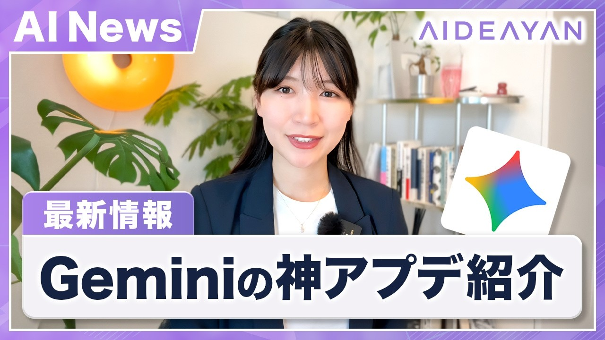
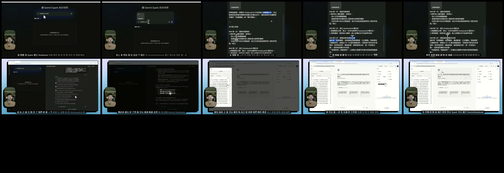

YouTube｜さき AIでええやん：Gemini Spark 24/7 個人 AI Agent 與排程工作流
來源：YouTube｜【さき】のAIでええやん。
原始連結：https://youtu.be/dDQM7qg_Au8
影片標題：【最新情報】GoogleのAI Geminiの最新アプデが自動で仕事を終わらせる。
長度：約 10 分 05 秒

一句話摘要
這支日文影片把 Gemini Spark 解讀成「24 小時運作的個人 AI 秘書」：可在雲端背景執行多步驟任務、產出 Slides / Sheets、設定定期排程，並把常用作業流程保存成 Skills；官方查核確認 Gemini Spark 與 Spark schedules 確有 Google 頁面，但實際可用性受訂閱方案、年齡、國家地區與企業帳號資格限制。
影片重點
- 影片主軸：Gemini 不再只是回答問題，而是能把任務拆成步驟，在背景完成研究、整理與檔案交付。
- 示例任務：以「北歐系室內雜貨趨勢」為題，請 Spark 搜尋資料、製作進貨會議用提案簡報，再追加生成含價格帶的 Google Sheets 商品候選清單。
- 排程工作：影片示範「每天早上 7 點整理 3 則最新 AI News 摘要」這類例行工作，將日常情報蒐集變成定時自動化。
- Skills：影片把 Spark Skills 解釋成「保存常用提示與流程」；下次只需換商品類別或任務題目，就能重用同一套工作流程。
- Google 生態系優勢：影片強調 Gmail、Calendar、Drive、Sheets、Docs、Meet 等企業常用工具已在 Google Workspace 內，導入門檻可能低於額外外部工具。
- 與 ChatGPT Work / Claude Cowork 的差異：影片觀點是一次性資料生成各家都可做，差異會出現在「長時間背景任務、資料所在位置、企業安全審查與排程例行工作」。
章節筆記
- 00:00–00:56：開場把 Gemini Spark 描述為 24 小時工作的 AI 秘書，能做簡報、文件、試算表與例行排程。
- 00:57–02:05：介紹 Spark 是雲端背景運行的 AI Agent，任務可在電腦關閉、手機鎖定時繼續執行；影片稱當下以 Ultra 為主要可用方案，Pro 將逐步擴展。
- 02:06–03:42：實作範例：北歐雜貨趨勢研究 → 會議提案簡報 → 商品清單試算表。
- 03:43–04:46：排程範例：每天早上自動整理 AI News digest，也可用於庫存檢查、收據整理等週期性任務。
- 04:47–05:53：Skills 概念：保存常用作業手順，與 Claude Skills 相比更偏提示詞/工作流程記憶。
- 05:54–07:45：Google Workspace 連動與企業導入情境；影片預測重複作業交給 AI、判斷留給人會成為常態。
- 08:11–08:26：補充 NotebookLM / Gemini Notebook 命名整合，視為 Google AI 產品逐步收束到 Gemini family 的訊號。
- 08:27–09:58：結尾導向 AI 學習與商業培訓 CTA。
官方查核與修正
- Google 官方 Gemini Spark 頁確認：Gemini Spark 是「24/7 personal AI agent」，可在背景處理多步驟任務，並以使用者授權/監督為前提；頁面同時列出 Tasks、Schedules、Skills、Workspace、Organization 等功能情境。
- Google Help Center 確認：Gemini Spark 可用於自動化複雜工作流程與管理 ongoing tasks；Spark schedules 可將 workflow 放上 autopilot，作為定時觸發器。
- Google Blog / Gemini scheduled actions 也確認 Gemini app 具「scheduled actions」能力，可設定例行摘要與特定時間任務；但這是 Gemini App 的排程功能，與 Spark 內部的 schedule workflow 應分開理解。
- 可用性需保守標註：官方 Spark 頁顯示需訂閱、18+，且 compatibility / availability vary；FAQ 顯示目前以 Google AI Ultra、部分國家與部分 business users 為主，實際是否在台灣/日本帳號可用需以帳號介面為準。
- 影片中關於「Gemini 3.5、Antigravity、Ultra 價格、Pro 將対応」等細節，需視為影片作者依當時介面/公告的整理；本文不把價格或 rollout 時程寫成永久事實。
為什麼值得收藏
Gemini Spark 的關鍵不是「多一個聊天入口」，而是 Google 把 AI 往「可排程、可背景執行、可連 Workspace 檔案與信件日曆」推進。對教育、內容製作、企業內訓、例行報告與研究整理來說，這類 Agent 的價值在於把「每天都要做但不值得人工重做」的工作變成可委派流程。
風險與採用提醒
- 工作流若會讀 Gmail、Drive、Calendar 或企業資料，必須先確認 Workspace 管理政策、資料權限與審計需求。
- 排程任務適合摘要、整理、提醒與低風險研究；涉及交易、寄信、預訂、採購、刪除資料等重大動作，仍需人工確認。
- 自動化內容可能過時或引用錯誤來源，尤其是新聞、市場價格、股票與競品資訊，應保留來源連結與人工抽查。
- 若用於公司導入，建議先從低風險例行報告、內部資料整理、會議摘要與教育訓練開始，而不是直接接觸敏感客戶資料。
2026-10-08 補充：用 Spark 建立 Gemini Notebook 研究筆記本
Facebook 創作者李安以 41 秒 Reel 示範一條研究整理流程：把欲研究的簡報或教材交給 Gemini Spark，指示它先理解檔案、建立 Gemini Notebook 筆記本，再按指定觀點補充 10 至 15 個參考來源；完成後進入 Notebook 的對話區繼續研究，或於工作室產出所需檔案。

這是創作者實機示範，不應延伸成所有帳號均可用的承諾。Google 的 Spark 官方頁與說明文件確認 Spark 可管理任務與工作流；至於本段影片所示的跨服務建立、來源補充與可用資格，仍要以個人帳號、地區、訂閱方案與當下介面為準。
實務上，這條流程最適合當作「研究起手式」：先提供明確研究問題與一批可信的一手材料，再要求補充來源時限定來源類型、時間範圍與排除條件。交付前至少檢查來源是否真實可開啟、是否支撐結論，以及是否涉及受限資料或著作權內容。
Facebook Reel（李安）：https://www.facebook.com/bboyanlee/videos/%E7%94%A8-gemini-spark-%E5%BB%BA%E7%AB%8B-notebook-%E7%A0%94%E7%A9%B6%E7%AD%86%E8%A8%98%E6%9C%AC/1914634403276141/
原始分享連結：https://www.facebook.com/share/v/1bSoYUwtJh/
2026-11-18 補充：Gemini Tasks 免費開放、雲端代理與付款查核
電腦王阿達 Rocky 報導 Gemini Tasks、雲端虛擬電腦、第三方應用、付款和方案限額，並稱 Spark 改名為 Tasks。以下以 2026-11-18 公開官方文件核對；本次未登入、啟用、授權或實測。原先七月 Spark 訂閱與地區描述屬歷史紀錄，不代表現在限制。
- 名稱及功能：Google 11 月 17 日公告以 Gemini 4 Hydrogen 提供任務處理，連接超過 60 個應用；Google 說明中心現稱「tasks in Gemini」。媒體稱 Spark 改名、可切換 Argon 是媒體報導及其介面觀察，本次引用的官方頁未明確證實完整改名關係或各帳號模型選項。
- 雲端及安全：Google 說每個帳號的硬體隔離虛擬機由 Google Cloud Agent Compute Engine 支援、沙箱與提示注入過濾並用；排程說明確認裝置關機後仍可雲端運作。Google 示例需授權 Password Manager 存取公用事業網站及 Gmail，並非所有網站均能登入或所有任務無需授權。外部網頁提示注入、錯誤操作、資料外洩仍有風險；官方承認任務可能失敗或需人手接續。
- 付款：Google 表示 AP2 購物搭配支援卡片的數位代碼，合作 Mastercard、Visa，American Express 即將加入；可設定消費上限，設計上購買前要確認或預先授權。數位代碼不等於零風險或所有商家卡片皆支援；Google 說仍有回饋與購物保障，實際以發卡機構、商家與地區條款為準。Instacart 示範只是加入購物車後交回 Instacart 完成訂單，不是所有示例均自動付款。
- 國家、資格：Google Help 表示澳洲、加拿大、印度、日本、南韓、美國可免 Google AI 訂閱使用；其餘 Gemini Apps 支援地區可憑 Pro 或 Ultra 使用，但排除歐洲經濟區、奈及利亞、瑞士及英國。媒體稱「台灣還沒辦法用」不等於官方對所有台灣付費帳號的結論；Google Gemini 網頁版支援地區清單列有台灣，因此依上述規則，符合資格的台灣 Pro／Ultra 個人帳號原則上包含在內，但個人帳號實際開通與各進階功能仍須以官方及介面為準。另需年滿 18、個人 Google 帳號與開啟 History，目前不支援工作或學校帳號；部分進階功能先在美國推出，不能推論六國全部功能一致。
- 排程：官方證實無訂閱或 Google AI Plus 最多每日一次、概略時段、最多 10 個有效排程；Pro／Ultra 可用更精確或更高頻率排程、Gmail 條件監測與主題事件監測，最多 50 個有效排程。這是同時有效排程數，不是每日執行次數；最多 15 個任務同時執行，達運算額度或併發上限時排程可能不執行，實際執行時間可能有延遲。任務內排程不同於聊天排程。
- 風險：敏感信件、登入憑證、個資、支出及對外行動應採最小授權與人工覆核；停止任務、撤銷連結、檢查歷史與審計，重要交易勿僅依賴消費上限。監測不適合即時或時間關鍵事件。
原文封面已單獨檢視，為 Gemini 畫面和媒體浮水印，未見可辨識真人；其餘六張文章截圖未逐張檢視。原圖授權未獲確認，未複製或公開，請回原文查看。
電腦王阿達原文：https://www.kocpc.com.tw/archives/703865
Google 公告：https://blog.google/innovation-and-ai/products/gemini-app/tasks-in-gemini-free-new-features/
Google 任務資格與操作：https://support.google.com/gemini/answer/17094507?hl=en
Google 網頁版支援地區：https://support.google.com/gemini/answer/13575153?hl=en
Google 任務排程與額度：https://support.google.com/gemini/answer/17094710?hl=en
官方來源
- Gemini Spark 官方頁：https://gemini.google/overview/agent/spark/
- Google Blog：The Gemini app becomes more agentic, delivering proactive, 24/7 help：https://blog.google/innovation-and-ai/products/gemini-app/next-evolution-gemini-app/
- Gemini Help：Use Gemini Spark to manage your tasks & workflows：https://support.google.com/gemini/answer/17094507
- Gemini Help：Create & manage schedules for tasks in Gemini Spark：https://support.google.com/gemini/answer/17094710
- Google Blog：Gemini app scheduled actions：https://blog.google/products-and-platforms/products/gemini/scheduled-actions-gemini-app/